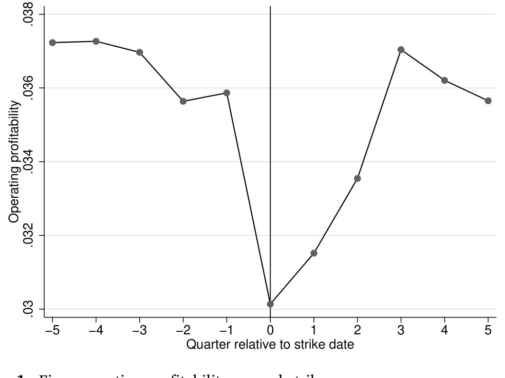
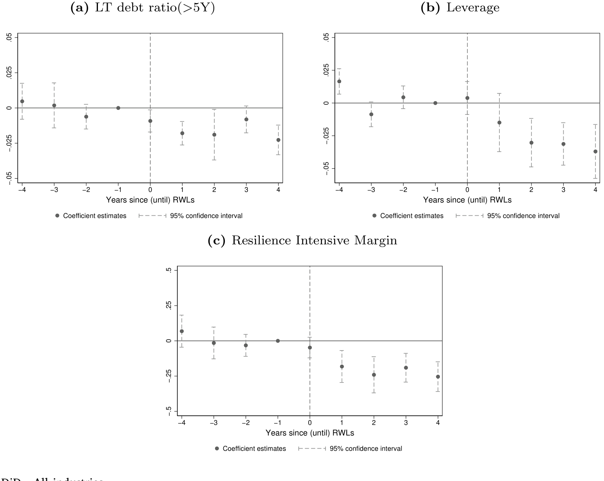
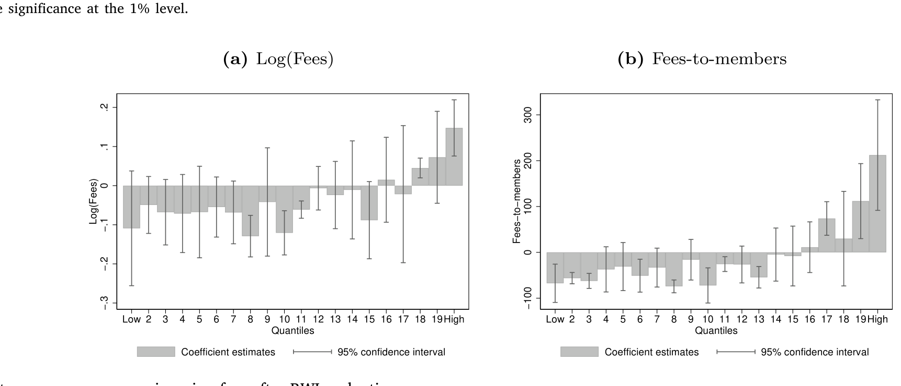
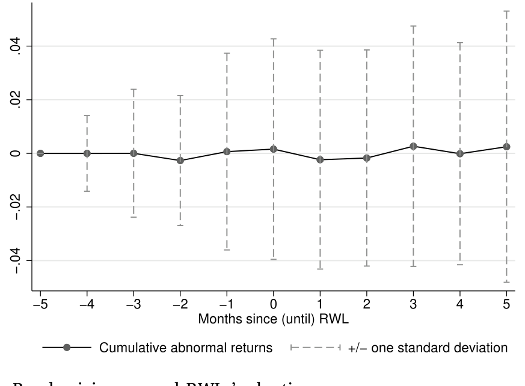
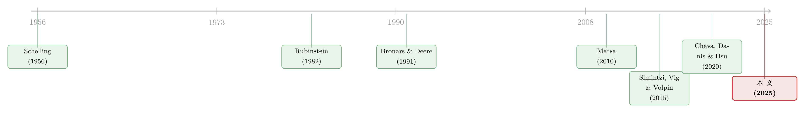

谈判桌上的「耗得起」：企业如何为一场罢工提前备好财务韧性
本文读的是 Avenancio-León, Piccolo & Pinto (2025, Journal of Financial Economics)：议价理论早就告诉我们「谁更耗得起拖延，谁就能在谈判桌上多拿」，但「耗得起」（韧性）通常是私人信息、难以测量。这篇论文把「财务违约」塞进经典的非合作议价模型，证明企业会在劳资谈判到来之前主动调整债务结构来制造韧性——核心抓手是拉长债务期限；而工会也会反过来调整自己的财务结构。一句话：决定工资的，不只是「谁更有理」，还有「谁更扛得住一场旷日持久的罢工」。
1 引言：一个关于「谁先撑不住」的故事
先讲一个 2007 年的场景。那年通用汽车（GM）和全美汽车工人联合会（UAW）剑拔弩张，《纽约时报》写下这样一句话：
「罢工会持续多久，也许取决于两个关键问题的答案：UAW 还能在外面撑多久？通用又还能扛多久一场罢工？」
你看，连记者都本能地意识到：这场谈判的胜负手，不在于谁的诉求「更正当」，而在于谁更耗得起。这正是议价理论（bargaining theory）一个最古老、也最深刻的结论——从 Rubinstein (1982) 到 Abreu and Gul (2000)，理论家们反复证明：双方对「拖延」的态度，决定了谈判的分配结果。一个对僵持不那么在意的人（也就是更「韧」的一方），有底气拒绝不利的报价，于是能在谈判中拿到更好的条件。
道理人人都懂。但问题来了——这个「耗得起」的能力，到底怎么测？ 它往往是私人信息：你不会主动告诉对手「我其实快撑不住了」。也正因如此，关于「韧性」与「谈判结果」之间联系的实证证据少得可怜，更别说去回答一个更尖锐的问题：现实中的当事方，会不会为了谈判而提前去『制造』韧性？
这篇论文做的，就是把这个抽象的理论命题，落到一个最经典的议价场景——集体谈判（collective bargaining）——里去验证。而且它找到了一把漂亮的尺子：企业的债务结构。
为什么是债务？因为债务给「谈判能拖多久」划了一条硬线。如果罢工把生产拖得太久，企业付不出到期的债，就要破产清盘——届时股东和工人一起拿零。所以一家企业的财务状况，恰恰决定了它在罢工里能撑多久。这把「私人信息」变成了一个可以从财务报表里读出来的、可观测的量。
而劳工成本绝不是小数目：美国 GDP 的劳动份额大约在 50% 上下；对上市公司而言，劳工成本约占总费用的 60%（Donangelo et al., 2019）。谈判桌上拉锯的，是真金白银。
2 先看一眼：罢工到底有多疼
在讲机制之前，论文先用一张图把「罢工很贵」这件事钉死。作者用美国劳工统计局（U.S. Bureau of Labor Statistics）的 Work Stoppages 数据库，挑出 1993–2019 年间涉及 1,000 名以上工人的罢工事件，匹配 Compustat 季度数据，看企业在罢工前后的经营利润率（oibda / 总资产）如何变化。样本是 57 起罢工，平均持续 20 天。

Figure 1: Firm operating profitability around strikes
如图 1 所示，企业的经营利润率在罢工那一刻明显掉了下去。罢工不是嘴上说说，它直接啃掉现金流。于是一个自然的问题浮出水面：既然罢工这么疼，企业会不会在谈判季来临之前，就提前把自己的财务「身板」练硬一点？
要回答这个问题，得先有一套能说清「韧性如何影响工资」的理论。
3 模型：把「破产」塞进 Rubinstein 议价
这篇论文最漂亮的地方，是把一个标准的非合作议价模型（Rubinstein, 1982; Binmore, 1987），加上一条「债务违约」的硬约束，就推出了一整套可检验的比较静态。下面我一步步把它讲清楚。
3.1 设定
舞台上有两类风险中性的玩家：股东 \(s\) 和工人 \(w\)。时间离散 \(t=0,1,2,\dots\)，无限期。企业有一个投资项目，能产出收入 \(1\)，需要投入资本 \(k\)（\(1>k>0\)）和工人的劳动。股东用股权 \(e\) 和债务来融资：在 \(t=0\) 借入 \(d\in[0,k]\)，承诺在到期日 \(T\)（\(T\le \bar T\)，\(\bar T\) 即债务期限上限）偿还 \(D\ge 0\)。
关键在于：股东在 \(t=0\)、也就是和工人开谈之前，就先把债务结构 \((D,T)\) 定下来。 这一步是「先手」——企业在谈判尚未开始时，就已经通过融资决策为自己布好了局。信贷市场据此定出实际借到的 \(d\)。
模型用 Assumption 1 把杠杆与期限的非战略性成本（破产成本、信息摩擦等）以约化形式装进来：
$$d \text{ is increasing and concave in } D,\quad d \text{ is decreasing in } T,\quad d\le D,\quad d(D=0)=0.$$
直觉上，借得越多（\(D\) 越大）实际到手 \(d\) 越多但有溢价；期限 \(T\) 越长，债主要的补偿越高，到手 \(d\) 越少。融资 \(e\) 的成本为 \(\kappa e\)，\(\kappa\in[1,\infty)\)，\(\kappa-1\) 是交易成本。
3.2 谈判协议
谈判按 Binmore (1987) 的随机提议者模型（random-proposer model）展开。每一期，工人以概率 \(\alpha\) 拿到出价权、股东以概率 \(1-\alpha\) 出价。这个 \(\alpha\)，就是工人的（外生）议价权——这是全文识别的命门，记住它。
谈判一旦拖延，收入就在缩水：若到第 \(t\) 期才达成协议，实现的收入是 \(\delta^t\)，其中 \(\delta\in(0,1)\)。工人在谈成之前停工，停一期就损失 \(1-\delta\) 的收入。达成协议时，先还债主 \(D\)，剩下的 \(\delta^t - D\) 按谈定的份额分：\(y_t\) 归股东，\(\delta^t - D - y_t\) 归工人。
3.3 韧性：那条硬线
现在请看这篇论文真正的「发动机」。企业能不能还债，取决于谈判怎么走：
- 若到 \(T\) 还没谈成，企业付不出 \(D\)，破产，\(s\) 和 \(w\) 都拿 \(0\)；
- 若在某个 \(t\) 出现 \(\delta^t \ge D\) 但 \(\delta^{t+1} < D\)，企业付不出未来的债，即使 \(t
- 若 \(D=0\)，没有债务约束，企业永不破产。
于是「谈判最多能拖多久」被一个量精确刻画：
$$t^* = \min\{\bar t,\, T\}\ \text{if } D>0,\qquad t^*=\infty\ \text{if } D=0.$$
作者把 \(t^*\) 称作企业对谈判的韧性（resilience to negotiations）——它就是企业破产前的最后一期。\(t^*\) 越大，企业越能耗。
3.4 谁更急？
Assumption 2 给出全文的行为前提：
$$\delta_s > \delta_w.$$
股东比工人更有耐心。 这在契约理论里很常见（DeMarzo and Sannikov, 2006; Opp and Zhu, 2015），背后的道理是工人更依赖劳动收入、分散化程度更低，因此（其他条件相同）更急着结束罢工。若一份在 \(t\) 期达成的协议 \(y_t\) 成立，\(s\) 的支付是 \(u_s=\delta_s^{\,t}\,y_t-\kappa e\)，\(w\) 的支付是 \(u_w=\delta_w^{\,t}(\delta^t - D - y_t)\)。均衡概念是子博弈完美均衡（SPE）。
3.5 均衡：立刻成交，但份额暗含「耗得起谁」
Proposition 1 给出唯一均衡：谈判在 \(t=0\) 当期就达成，不会真的拖延（双方都规避了拖延的损失，结果是帕累托有效的）。但——这是最妙的一点——真正成交的那个份额，反映的是「假如真的一路拖到 \(t^*\)，双方各自要付多大代价」。也就是说，罢工几乎从不真正发生，但「能罢多久」这个威胁的影子，已经定好了工资。
股东在均衡里拿到的期望份额是：
而工人拿到的，是 \(1-D-\mathbb{E}[y_0^*]\)。盯住 a3 和 a4 这两块：因为 \(\delta_s>\delta_w\)，耐心差 \((\delta_s-\delta_w)>0\)，而它要乘上一个对 \(t^*\) 求和的项。\(t^*\) 越大（企业越韧），这个求和越大，股东 \(\mathbb{E}[y_0^*]\) 越高、工人拿得越少。 这就是核心：韧性把工资压了下去。
3.6 两个抓手：期限与杠杆，方向相反
把 \(t^*=\min\{\bar t, T\}\) 代回去，比较静态就出来了，而这正是连接理论与数据的桥：
- 债务期限 \(T\)↑ → 韧性 \(t^*\)↑ → 工资明确下降。 期限越长，企业有更多时间还债，能扛更久的罢工，于是「拖下去」的威胁更可信，工资被压低。这个方向是无歧义的。
- 杠杆 \(D\)↑ 有两股相反的力：一方面，它直接缩小了可谈判的剩余（先得还债主），这就是经典的「战略性杠杆（strategic leverage）」——Bronars and Deere (1991)、Perotti and Spier (1993)、Matsa (2010) 讲的故事，借更多债把蛋糕从谈判桌上挪走，压低工资；但另一方面，杠杆越高企业越脆、\(t^*\) 越小，工人反而能从剩余里分到更大的比例。后面这股力，是企业用杠杆当谈判工具时一个被忽视的「战略成本」。
这是全文在理论上的核心张力：「战略性杠杆」想让企业多借债、把蛋糕挪走；「财务韧性」却要求企业别太脆、好扛住罢工。两者有时是打架的。 论文用一个统一的模型把这对矛盾收编，并预言：在期限这条「无歧义」的维度上，面对越强的工人（\(\alpha\) 越高），企业越该把债借得更长。
4 识别策略：用「工作权法」给工人议价权做一次外生减法
理论说工资和韧性由 \(\alpha\)（工人议价权）驱动，可 \(\alpha\) 在数据里没法直接观测，更没法随机分配。论文沿用文献里的成熟做法（Matsa, 2010; Fortin et al., 2023），用美国各州工作权法（right-to-work laws, RWLs）的陆续通过，作为工人议价权 \(\alpha\) 的一次外生下降。
RWL 禁止「入职即须入会／交费」的强制条款，会侵蚀工会的会员与经费基础，从而削弱工人在谈判中的力量——这正对应模型里 \(\alpha\) 的下降。识别用的是交错双重差分（staggered difference-in-differences, DiD）：处理组是位于通过 RWL 的州的企业，控制组是尚未通过的州；通过事件研究（event study）画平行趋势来支撑识别。

Figure 2: Parallel trends DiD - All industries
如图 2 所示，债务期限在 RWL 通过之前没有明显的差异趋势（平行趋势成立），通过之后才出现系统性的变化。论文的主结果是：
RWL 通过后，企业明确缩短了债务期限。
请把这个方向和模型对上：\(\alpha\) 下降 → 工人变弱 → 企业不再需要那么强的韧性去压制工资 → 没必要再把债借那么长 → 期限缩短。反过来读就是——面对越强势的工人，企业越倾向于借长债。债务期限，成了劳资力量对比的一面镜子。
更关键的是异质性：期限的下降在 (a) 高工会化行业的企业和工会化企业本身 更明显，也在 (b) 罢工成本更高的企业（那些在罢工期间更难额外借款、更难变卖库存的企业）更明显。这恰恰是「集体谈判触发了财务韧性调整」这一解释的有力佐证——如果不是因为谈判，凭什么偏偏是这些企业反应最大？
5 反转：工会自己也在「修韧性」
到这里，故事似乎是单向的：企业调整、工人挨打。但论文走了关键一步——它把镜头转向工会自己。议价从来是双向的，工会难道不会也想办法变得更「耗得起」？
作者用美国劳工部劳资关系标准办公室（Office of Labor-Management Standards, OLMS）的工会财务数据来看。结果耐人寻味：RWL 通过后，工会平均经历了会员流失、总会费下降，但它们把现金保持不变——也就是说，工会同样在守住自己的财务韧性。而且响应在规模上严重分化：

Figure 6: Heterogeneous response in union fees after RWLs adoptions
如图 6 所示，大工会提高了人均会费，结果总会费不降反升，比 RWL 之前还高；小工会则转向加杠杆。换句话说，大工会更有能力在敌意立法之后留住支持、抵消冲击，小工会则只能靠借钱续命。这把「韧性」从企业一侧扩展到了谈判的两侧，让「集体谈判过程」这个整体变得完整——工会的财务反应，本身就是谈判过程的一部分。
6 排除性证据：不是信贷市场在替企业「改主意」
一个聪明的读者立刻会担心：企业缩短期限，会不会不是因为谈判，而是因为 RWL 改变了信贷市场对它们的看法（比如违约风险变了，债主重新定价）？如果是后者，那债务结构的变化就只是信贷市场反应的「副产品」，跟谈判没直接关系。
论文用一组排除性检验把这条替代解释堵死。最关键的一张：

Figure 7: Bond pricing around RWLs’ adoptions
如图 7 所示，RWL 通过前后，企业的债券定价没有显著变化。 既然信用利差没动，就说明债务结构的调整是企业直接为了劳资谈判做出的主动选择，而不是被信贷市场的反应间接推着走的。作者还检验了「经营柔性（operating flexibility）」这条机制，同样没有得到数据支持。一正一反，把「财务韧性是谈判的直接抓手」这个解释立住了。
7 文献脉络
把这篇论文放回它的家谱里看，会更清楚它补上了哪一块。
最上游是议价理论本身：Schelling (1956) 谈「承诺」如何改善谈判地位，Rubinstein (1982) 与 Binmore (1987) 奠定了非合作议价的范式——对拖延的态度决定分配。
接着，公司金融把这套思想引进资本结构：Bronars and Deere (1991) 提出企业可以用债务作为对抗工会的战略工具（「战略性杠杆」），Perotti and Spier (1993) 把杠杆当作再谈判筹码，Matsa (2010) 用集体谈判数据证明了资本结构确实是一个战略变量。再往后，Simintzi, Vig and Volpin (2015) 研究劳工保护与杠杆，Chava, Danis and Hsu (2020) 与 Fortin, Lemieux and Lloyd (2023) 则把 RWL 作为劳工议价权的外生冲击用了起来。

而这篇论文站的位置是：第一次把「财务韧性」作为一个独立的、可观测的维度，正式写进工资决定的过程，并且指出它与「战略性杠杆」之间存在内在张力——前人多在「借多少（杠杆）」上做文章，这篇把焦点移到了被忽视的「借多久（期限）」，还顺手把工会的财务反应也纳了进来。
顺带一提，「议价权如何塑造企业财务政策」这条线近年颇热。关于企业如何用财务安排在谈判桌上争取地位，可参见《把「门槛」抬高，是为了在谈判桌上赢回来——重新理解企业为何固守过高的内部收益率》，两者的精神是相通的：财务决策不只是融资，更是一种事前的议价布局。
8 评论与延伸（Q&A + 研究方向）
(a) 几个可能的疑问
Q：「财务韧性」和经典的「战略性杠杆」到底有什么不一样？
战略性杠杆讲的是「多借债→把可分配蛋糕挪走→压低工资」，方向单一、聚焦在杠杆水平 \(D\) 上。财务韧性则强调「我能不能扛住一场长罢工」，它主要由债务期限 \(T\) 决定，且与杠杆方向相反——杠杆越高反而越脆、越不韧。这篇论文的贡献恰恰是点出两者会打架，并证明在数据里期限（而非杠杆）才是韧性的主要抓手。
Q：用 RWL 当作 \(\alpha\) 的外生下降，识别可信吗？
RWL 由州层面立法、时点交错，比企业自身的财务选择更外生，这是它被广泛采用的原因。论文用事件研究展示了平行趋势（图 2–4）。但交错 DiD 在异质处理效应下的双向固定效应估计存在已知偏误（Goodman-Bacon, 2021; Baker, Larcker and Wang, 2022; Callaway and Sant'Anna, 2021），稳健性是否做了这些新估计量，是读者该重点核对的地方。
Q：工人变弱了（\(\alpha\)↓），企业为什么还要动？而且为何是「缩短」期限？
因为期限本是用来「对付强工人」的工具。模型说，面对越强的工人、企业越该借长债来积累韧性、压低工资。一旦 RWL 把工人打弱，这种昂贵的韧性就不再划算，企业自然把期限收回来。方向是缩短，而不是延长——这与「面对强工人借长债」是同一枚硬币的两面。
Q：工会为何分化——大工会涨人均会费、小工会加杠杆？
论文的解读是「留客能力」的差异：大工会议价与服务能力强，即使会员流失，也能靠提高人均会费把总收入顶住，从而维持韧性；小工会缺乏这种定价权，只能转向借债来续命。这把「韧性」从企业一侧扩展到工会一侧，让谈判过程双向完整。
Q：债券定价没变（图 7），这一条为什么这么重要？
这是全文的排除性证据。如果债务结构的变化只是信贷市场对 RWL 重新定价的副产品，那「企业主动为谈判建韧性」的故事就站不住。利差不动，说明调整来自企业的主动选择，而非被债主推着走——这把因果方向钉在了「谈判→财务」而非「信贷市场→财务」。
Q：模型假设股东比工人更耐心（\(\delta_s>\delta_w\)），现实吗？
工人更依赖劳动收入、分散化更差，因此更急着结束罢工，这个排序是合理的基准。论文也坦诚：实务中是管理层代股东谈判，\(\delta_s\) 其实是股东与管理层耐心的加权；在 Internet Appendix 里他们放松到 \(\delta_s\)、\(\delta_w\) 足够接近甚至 \(\delta_s<\delta_w\) 的情形，主要定性预言仍成立。
(b) 几个可能的研究问题与提案
1. 韧性调整如何外溢到公司债二级市场的流动性？
【经济故事】企业为谈判拉长债务期限，会改变其债券的久期结构与到期分布；久期更长的债券对利率更敏感，做市商的库存与报价也可能随之变化。「为劳资谈判而生的期限选择」是否在二级市场留下流动性印记，是个有意思的问题。 【可行性】中。可用
TRACE（成交与利差）+Mergent FISD（发行期限）+ OLMS/RWL，沿用本文的交错 DiD 框架。难点在于把「期限调整」与一般再融资区分开。
2. 外资持有人作为「耐心资本」，会不会让企业更有韧性？
【经济故事】模型的关键是股东的耐心 \(\delta_s\)。如果外资机构投资者比本土投资者更耐心（更长持有期、更少受短期流动性冲击），那么外资持有比例高的企业，是否在劳资谈判中表现得更「韧」、工资更被压低？这把本文与「外资持有人」这条线接了起来。 【可行性】中。需
eMAXX/13F 的持有人结构数据匹配 RWL 与债务期限。识别难点是外资持股本身的内生性，可能要借助指数纳入或税收事件做工具。
3. 工会自身的资产端韧性，如何影响罢工的持续与结果？
【经济故事】本文已展示工会会动用会费与杠杆来维持韧性。更进一步：工会的现金、罢工基金（strike fund）越厚，是否真的能让它在罢工里撑更久、拿到更好的合同？这是对「韧性→谈判结果」最直接的检验。 【可行性】高。OLMS 的 LM-2 报表有工会资产负债细项，可匹配 BLS
Work Stoppages的罢工持续天数与结果。
4. 用罢工持续时间直接度量「耗得起」。
【经济故事】\(t^*\) 是个隐变量，但罢工真实的持续天数，是它最贴近的观测代理。把双方的事前财务韧性（企业的期限/杠杆、工会的现金）放进去解释罢工时长，能更直接地验证模型机制。 【可行性】高。数据现成（BLS + Compustat + OLMS），唯一的样本限制是大规模罢工本就不多（本文只有 57 起）。
9 我的判断
贡献。 这篇论文最让我欣赏的，是它把一个抽象到几乎无法实证的命题——「当事方会不会为谈判而主动制造韧性」——通过「债务给罢工划了破产硬线」这个巧妙的桥，变成了一个可以从财务报表里读出来、可以用 RWL 做外生冲击去检验的实证问题。而且它没有停在「企业借长债压工资」的老结论上，而是辨析出期限（韧性）与杠杆（战略性蛋糕挪移）方向相反这层细腻的张力，再把工会的财务反应也纳进来，让「集体谈判过程」第一次被当作一个双向的整体来刻画。
对识别的担忧。 我最想追问的有两点。其一是交错 DiD 的稳健性：在异质且随时间变化的处理效应下，传统双向固定效应可能有偏，希望看到 Callaway-Sant'Anna 或 Borusyak 等新估计量的对照。其二是 RWL 的「外生性」边界——RWL 的通过未必与州的经济周期、产业结构变迁完全无关，而这些同样会影响企业的债务期限选择；图 7 的债券定价安慰检验很有力，但若能再加一组对 RWL 通过时点本身的预测性检验会更稳。
后续想看。 我最期待的是把 \(t^*\) 从隐变量「逼」到可观测：用真实的罢工持续天数、用工会罢工基金的厚度，去直接验证「韧性→谈判时长→工资」这条链；以及——出于我自己的研究偏好——把「持有人耐心」这条线接进来，看外资这类长期资本是否系统性地改变了企业在谈判桌上的「耗得起」。这会让这篇论文的洞见，从劳资谈判溢出到更广的公司金融与信用市场。
参考文献
- Abreu, D., Gul, F. (2000). Bargaining and reputation. Econometrica 68(1), 85–117.
- Avenancio-León, C.F., Piccolo, A., Pinto, R. (2025). Resilience in collective bargaining. Journal of Financial Economics 173, 104157.
- Baker, A.C., Larcker, D.F., Wang, C.C. (2022). How much should we trust staggered difference-in-differences estimates? Journal of Financial Economics 144(2), 370–395.
- Binmore, K.G. (1987). Perfect equilibria in bargaining models. In The Economics of Bargaining, Basil Blackwell, Oxford, 77–105.
- Bronars, S.G., Deere, D.R. (1991). The threat of unionization, the use of debt, and the preservation of shareholder wealth. Quarterly Journal of Economics 106(1), 231–254.
- Callaway, B., Sant'Anna, P.H. (2021). Difference-in-differences with multiple time periods. Journal of Econometrics 225(2), 200–230.
- Chava, S., Danis, A., Hsu, A. (2020). The economic impact of right-to-work laws: Evidence from collective bargaining agreements and corporate policies. Journal of Financial Economics 137(2), 451–469.
- DeMarzo, P.M., Sannikov, Y. (2006). Optimal security design and dynamic capital structure in a continuous-time agency model. Journal of Finance 61(6), 2681–2724.
- Donangelo, A., Gourio, F., Kehrig, M., Palacios, M. (2019). The cross-section of labor leverage and equity returns. Journal of Financial Economics 132(2), 497–518.
- Fortin, N., Lemieux, T., Lloyd, N. (2023). Right-to-work laws, unionization, and wage setting. Research in Labor Economics 50, 285–326.
- Goodman-Bacon, A. (2021). Difference-in-differences with variation in treatment timing. Journal of Econometrics 225(2), 254–277.
- Matsa, D.A. (2010). Capital structure as a strategic variable: Evidence from collective bargaining. Journal of Finance 65(3), 1197–1232.
- Opp, M.M., Zhu, J.Y. (2015). Impatience versus incentives. Econometrica 83(4), 1601–1617.
- Perotti, E.C., Spier, K.E. (1993). Capital structure as bargaining tool: The role of leverage in contract renegotiation. American Economic Review 83(5), 1131–1141.
- Rubinstein, A. (1982). Perfect equilibrium in a bargaining model. Econometrica 50(1), 97–109.
- Schelling, T.C. (1956). An essay on bargaining. American Economic Review 46(3), 281–306.
- Simintzi, E., Vig, V., Volpin, P. (2015). Labor protection and leverage. Review of Financial Studies 28(2), 561–591.